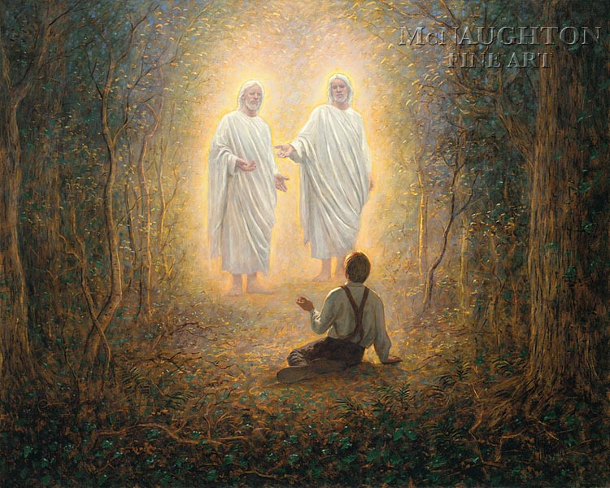
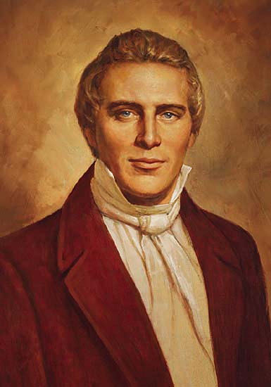

Articles

What was the First Vision?
In a period of conflicting ideology surround God, Christ, and salvation, one 14 year old sought answers to the basics of religion.
Read More
Who was Joseph Smith?
"Millions shall know Brother Joseph again", wrote William W. Phelps, a man who betrayed and then befriended once more the first prophet in the modern era.
Read More
Why are there multiple accounts of the First Vision?
In addition to the main account of the First Vision found in church scripture, 3 additional primary sources can instruct us on the important event.
Read MoreMore talks about the Restoration of the Church
Dozens of professionals and scholars have written discourses on the impact of the First Vision and Joseph Smith on today's world. Take a look!
Read More